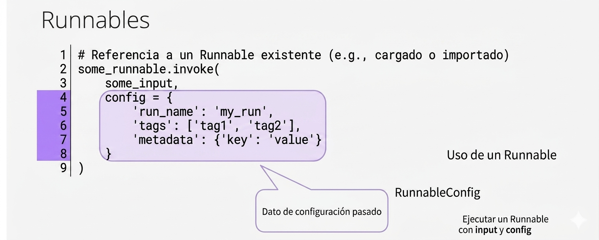

2. Los runnables de LangChain#
LangChain proporciona una interfaz unificada llamada Runnable que sirve como base para todos los componentes ejecutables en el framework. Esta interfaz estandariza la forma en que interactúas con diferentes componentes, permitiendo una composición elegante y consistente.
La interfaz Runnable es ahora el componente principal de LangChain. Estandariza cómo se ejecutan y componen los componentes, como LLM, analizadores de salida, recuperadores y flujos de trabajo de agentes .
Un Runnable es cualquier objeto que implementa la interfaz estándar de LangChain con los siguientes métodos principales:
invoke(): Ejecuta el runnable con una entrada y devuelve una salidabatch(): Ejecuta el runnable con múltiples entradas en paralelostream(): Ejecuta el runnable y devuelve resultados progresivamenteainvoke(),abatch(),astream(): Versiones asíncronas de los métodos anteriores
Veamos a continuación un ejemplo de invocación de un Runnable con configuración personalizada:
some_runnable.invoke(
some_input,
config={
'run_name': 'my_run',
'tags': ['tag1', 'tag2'],
'metadata': {'key': 'value'}
}
)
Como puede verse cualquier runable puede admitir como parámetro otro objeto denominado RunnableConfig, cuya exposición detallada la podemos encontrar en el siguiente enlace :

2.1. Componentes que son Runnables#
Prácticamente todos los componentes principales de LangChain son Runnables:
Modelos de lenguaje (LLMs y Chat Models)
Prompts (ChatPromptTemplate, PromptTemplate)
Output Parsers
Retrievers
Tools
Chains personalizados
2.2. La Interfaz Runnable#
2.2.1. Estructura Base#
from langchain_core.runnables import Runnable
class MyCustomRunnable(Runnable):
def invoke(self, input, config=None):
# Implementar lógica de procesamiento
return output
def batch(self, inputs, config=None):
# Procesar múltiples inputs
return [self.invoke(inp, config) for inp in inputs]
def stream(self, input, config=None):
# Devolver resultados progresivamente
yield chunk
2.2.2. Beneficios de la Interfaz Runnable#
Composición Declarativa: Combina componentes usando operadores simples
Ejecución Flexible: Soporte para síncrono, asíncrono, batch y streaming
Observabilidad: Trazabilidad automática con LangSmith
Configuración Unificada: Configuración consistente a través de
RunnableConfig
2. LCEL: LangChain Expression Language#
LCEL es una sintaxis declarativa para componer runnables de manera elegante y eficiente. El operador principal es el pipe (|).
LCEL (LangChain Expression Language) permite componer ejecutables de manera eficiente utilizando una sintaxis similar a las tuberías de Linux :
´´´python chain = prompt | llm | output_parser ´´´
En lugar de gestionar manualmente la ejecución , LCEL optimiza automáticamente el flujo de trabajo, lo que facilita la creación de aplicaciones de IA escalables .
La transición de las cadenas tradicionales a ejecutables y LCEL proporciona mayor flexibilidad, eficiencia y componibilidad . Los desarrolladores ahora pueden crear pipelines de IA complejos con menos código repetitivo, centrándose en definir flujos de trabajo en lugar de gestionar la ejecución
2.1. Sintaxis Básica del Pipe#
from langchain_core.prompts import ChatPromptTemplate
from langchain_openai import ChatOpenAI
from langchain_core.output_parsers import StrOutputParser
# Componentes individuales
prompt = ChatPromptTemplate.from_template("Cuéntame un chiste sobre {tema}")
model = ChatOpenAI(model="gpt-4")
parser = StrOutputParser()
# Composición con LCEL
chain = prompt | model | parser
# Ejecución
resultado = chain.invoke({"tema": "programación"})
2.2. ¿Por Qué Usar LCEL?#
Ventajas sobre composición manual:
Código más limpio: Sintaxis declarativa vs imperativa
Streaming automático: Los componentes se ejecutan de forma incremental
Paralelización: Ejecución paralela de branches independientes
Trazabilidad: Cada paso es rastreado automáticamente
Configuración propagada: Config se propaga a través de la cadena
2. Métodos Principales de Runnable#
2.1. invoke() - Ejecución Simple#
# Ejecutar un solo input
resultado = chain.invoke({"input": "valor"})
# Con configuración
from langchain_core.runnables import RunnableConfig
config = RunnableConfig(
run_name="Mi Ejecución Personalizada",
tags=["produccion", "v1"],
metadata={"usuario": "juan"}
)
resultado = chain.invoke({"input": "valor"}, config=config)
2.2. batch() - Procesamiento en Lote#
# Procesar múltiples inputs en paralelo
inputs = [
{"tema": "perros"},
{"tema": "gatos"},
{"tema": "pájaros"}
]
resultados = chain.batch(inputs)
# Controlar concurrencia
resultados = chain.batch(
inputs,
config={"max_concurrency": 3}
)
2.3. batch_as_completed() - Streaming de Batch#
# Recibir resultados conforme se completan
for resultado_info in chain.batch_as_completed(inputs):
indice = resultado_info["index"]
resultado = resultado_info["result"]
print(f"Completado {indice}: {resultado}")
2.4. stream() - Streaming Incremental#
# Stream de texto
for chunk in chain.stream({"tema": "inteligencia artificial"}):
print(chunk, end="", flush=True)
# Stream con eventos
for event in chain.stream(
{"query": "¿Qué es Python?"},
config={"run_name": "ConsultaStreaming"}
):
print(event)
2.5. Métodos Asíncronos#
import asyncio
async def procesar_async():
# Async invoke
resultado = await chain.ainvoke({"input": "valor"})
# Async batch
resultados = await chain.abatch(inputs)
# Async stream
async for chunk in chain.astream({"input": "valor"}):
print(chunk, end="", flush=True)
asyncio.run(procesar_async())
2. Composición de Chains con LCEL#
2.1. Composición Secuencial#
# Chain básico: prompt -> modelo -> parser
chain = prompt | model | parser
# Chain con múltiples pasos
step1 = prompt1 | model | parser
step2 = prompt2 | model | parser
step3 = prompt3 | model | parser
# Componer en secuencia
full_chain = step1 | step2 | step3
2.2. RunnablePassthrough - Pasar Datos Sin Modificar#
from langchain_core.runnables import RunnablePassthrough
# Pasar input directamente
chain = RunnablePassthrough() | model
# Pasar y añadir datos
from langchain_core.runnables import RunnableParallel
chain = RunnableParallel({
"original": RunnablePassthrough(),
"procesado": prompt | model
})
resultado = chain.invoke({"texto": "Hola mundo"})
# {'original': {'texto': 'Hola mundo'}, 'procesado': '...'}
2.3. RunnableParallel - Ejecución Paralela#
from langchain_core.runnables import RunnableParallel
# Ejecutar múltiples chains en paralelo
parallel_chain = RunnableParallel({
"resumen": prompt_resumen | model | parser,
"sentimiento": prompt_sentimiento | model | parser,
"keywords": prompt_keywords | model | parser
})
resultado = parallel_chain.invoke({"texto": "Texto a analizar"})
# {
# 'resumen': '...',
# 'sentimiento': 'positivo',
# 'keywords': ['palabra1', 'palabra2']
# }
2.4. RunnableLambda - Funciones Personalizadas#
from langchain_core.runnables import RunnableLambda
# Función personalizada
def procesar_texto(input_dict):
texto = input_dict["texto"]
return {"texto_procesado": texto.upper()}
# Convertir a Runnable
lambda_runnable = RunnableLambda(procesar_texto)
# Usar en chain
chain = lambda_runnable | prompt | model
# También con decorador
from langchain_core.runnables import chain
@chain
def mi_funcion_personalizada(input_dict):
# Lógica personalizada
return {"resultado": "procesado"}
# Usar directamente
chain = mi_funcion_personalizada | model
2.5. RunnableBranch - Enrutamiento Condicional#
from langchain_core.runnables import RunnableBranch
# Definir ramas condicionales
branch = RunnableBranch(
(
lambda x: "urgente" in x["texto"].lower(),
prompt_urgente | model # Si es urgente
),
(
lambda x: "consulta" in x["texto"].lower(),
prompt_consulta | model # Si es consulta
),
prompt_general | model # Ruta por defecto
)
resultado = branch.invoke({"texto": "Tengo una consulta urgente"})
2. Runnables Especializados#
2.1. RunnableSequence - Secuencia Explícita#
from langchain_core.runnables import RunnableSequence
# Crear secuencia explícitamente
sequence = RunnableSequence(
first=prompt,
middle=[model, parser],
last=otro_paso
)
# Equivalente a usar pipe
sequence = prompt | model | parser | otro_paso
2.1.1. RunnableMap - Mapeo de Datos#
from langchain_core.runnables import RunnableMap
# Mapear múltiples operaciones
mapped = RunnableMap({
"uppercase": RunnableLambda(lambda x: x.upper()),
"lowercase": RunnableLambda(lambda x: x.lower()),
"length": RunnableLambda(lambda x: len(x))
})
resultado = mapped.invoke("Hola Mundo")
# {'uppercase': 'HOLA MUNDO', 'lowercase': 'hola mundo', 'length': 10}
2.2. RunnableWithFallbacks - Respaldo en Errores#
from langchain_core.runnables import RunnableWithFallbacks
# Chain principal con fallback
chain_con_fallback = model_principal.with_fallbacks(
fallbacks=[model_secundario, model_terciario],
exceptions_to_handle=(Exception,)
)
# Usar en chain completo
chain = prompt | chain_con_fallback | parser
2.3. RunnableRetry - Reintentos Automáticos#
# Configurar reintentos
chain_con_retry = model.with_retry(
stop_after_attempt=3,
wait_exponential_jitter=True
)
chain = prompt | chain_con_retry | parser
2. Configuración Avanzada#
2.1. RunnableConfig#
from langchain_core.runnables import RunnableConfig
# Configuración completa
config = RunnableConfig(
# Identificación
run_name="Procesamiento de Documento",
run_id="unique-run-id-123",
# Metadatos
tags=["produccion", "alta-prioridad"],
metadata={
"usuario": "juan@example.com",
"documento_id": "DOC-123",
"version": "2.0"
},
# Control de ejecución
max_concurrency=5,
recursion_limit=25,
# Callbacks personalizados
callbacks=[mi_callback_handler],
# Configuración específica del componente
configurable={
"thread_id": "conversation-456",
"user_id": "user-789"
}
)
resultado = chain.invoke({"input": "datos"}, config=config)
2.2. Configurar Componentes con .with_config()#
# Configurar un runnable específico
model_configurado = model.with_config({
"run_name": "ModeloGPT4",
"tags": ["llm", "openai"]
})
chain = prompt | model_configurado | parser
2.2.1. Binding - Vincular Parámetros#
# Vincular parámetros específicos al modelo
model_con_tools = model.bind_tools(
tools=[herramienta1, herramienta2],
tool_choice="auto"
)
# Vincular parámetros adicionales
model_personalizado = model.bind(
temperature=0.9,
max_tokens=500,
stop_sequences=["FIN"]
)
chain = prompt | model_personalizado | parser
2. Ejemplos Prácticos Completos#
2.1. Ejemplo 1: Sistema RAG Completo#
from langchain_core.prompts import ChatPromptTemplate
from langchain_openai import ChatOpenAI, OpenAIEmbeddings
from langchain_core.output_parsers import StrOutputParser
from langchain_core.runnables import RunnablePassthrough, RunnableParallel
from langchain_community.vectorstores import FAISS
from langchain_core.documents import Document
# 1. Configurar componentes
embeddings = OpenAIEmbeddings()
model = ChatOpenAI(model="gpt-4", temperature=0)
# 2. Crear vector store con documentos
documents = [
Document(page_content="Python es un lenguaje de programación interpretado."),
Document(page_content="JavaScript es el lenguaje de la web."),
Document(page_content="Java es un lenguaje de programación orientado a objetos.")
]
vectorstore = FAISS.from_documents(documents, embeddings)
retriever = vectorstore.as_retriever(search_kwargs={"k": 2})
# 3. Crear prompt template
template = """Responde la pregunta basándote ÚNICAMENTE en el siguiente contexto:
Contexto:
{context}
Pregunta: {question}
Respuesta:"""
prompt = ChatPromptTemplate.from_template(template)
# 4. Función para formatear documentos
def format_docs(docs):
return "\n\n".join(doc.page_content for doc in docs)
# 5. Construir chain RAG con LCEL
rag_chain = (
{
"context": retriever | format_docs,
"question": RunnablePassthrough()
}
| prompt
| model
| StrOutputParser()
)
# 6. Ejecutar
pregunta = "¿Qué es Python?"
respuesta = rag_chain.invoke(pregunta)
print(respuesta)
# 7. Streaming
for chunk in rag_chain.stream("Háblame sobre JavaScript"):
print(chunk, end="", flush=True)
2.2. Ejemplo 2: Análisis Multi-Modelo con Fallbacks#
from langchain_core.prompts import ChatPromptTemplate
from langchain_openai import ChatOpenAI
from langchain_anthropic import ChatAnthropic
from langchain_core.output_parsers import JsonOutputParser
from langchain_core.runnables import RunnableParallel
from pydantic import BaseModel, Field
# 1. Definir esquema de salida
class AnalisisTexto(BaseModel):
sentimiento: str = Field(description="positivo, negativo o neutral")
temas: list[str] = Field(description="lista de temas principales")
resumen: str = Field(description="resumen en una oración")
puntuacion_calidad: int = Field(description="puntuación de 1 a 10")
# 2. Configurar modelos con fallback
modelo_principal = ChatOpenAI(model="gpt-4")
modelo_fallback = ChatAnthropic(model="claude-3-sonnet-20240229")
modelo_con_fallback = modelo_principal.with_fallbacks(
fallbacks=[modelo_fallback],
exceptions_to_handle=(Exception,)
)
# 3. Configurar parser
parser = JsonOutputParser(pydantic_object=AnalisisTexto)
# 4. Crear prompts especializados
prompt_analisis = ChatPromptTemplate.from_messages([
("system", "Eres un analista de texto experto. Analiza el texto y devuelve un JSON con tu análisis."),
("human", "{texto}\n\n{format_instructions}")
])
prompt_extraccion = ChatPromptTemplate.from_messages([
("system", "Extrae las entidades clave del texto."),
("human", "{texto}")
])
# 5. Crear análisis paralelo
analisis_completo = RunnableParallel({
"analisis_estructurado": (
prompt_analisis
| modelo_con_fallback
| parser
),
"entidades": (
prompt_extraccion
| modelo_con_fallback
| StrOutputParser()
),
"texto_original": RunnablePassthrough()
})
# 6. Añadir post-procesamiento
@chain
def consolidar_resultados(resultados):
return {
"analisis": resultados["analisis_estructurado"],
"entidades": resultados["entidades"],
"metadata": {
"longitud_original": len(resultados["texto_original"]),
"procesado_en": "UTC timestamp"
}
}
# 7. Chain completo
chain_completo = analisis_completo | consolidar_resultados
# 8. Ejecutar con configuración
config = RunnableConfig(
run_name="AnálisisTextoCompleto",
tags=["analisis", "multi-modelo"],
metadata={"version": "1.0"}
)
texto_ejemplo = """
La nueva tecnología de IA ha revolucionado la industria.
Los expertos están entusiasmados con las posibilidades.
Sin embargo, también existen preocupaciones sobre la ética.
"""
resultado = chain_completo.invoke(
{
"texto": texto_ejemplo,
"format_instructions": parser.get_format_instructions()
},
config=config
)
print(resultado)
2.3. Ejemplo 3: Sistema de Enrutamiento Inteligente#
from langchain_core.prompts import ChatPromptTemplate
from langchain_openai import ChatOpenAI
from langchain_core.output_parsers import StrOutputParser
from langchain_core.runnables import RunnableBranch, RunnableLambda
from typing import Literal
# 1. Modelo para clasificación
classifier_model = ChatOpenAI(model="gpt-3.5-turbo", temperature=0)
# 2. Prompt de clasificación
classification_prompt = ChatPromptTemplate.from_template(
"""Clasifica la siguiente consulta en UNA de estas categorías:
- tecnica: preguntas técnicas sobre programación o tecnología
- general: preguntas generales de conocimiento
- creativa: solicitudes de contenido creativo
Consulta: {query}
Responde SOLO con la categoría (tecnica, general o creativa):"""
)
# 3. Chain de clasificación
classification_chain = classification_prompt | classifier_model | StrOutputParser()
# 4. Prompts especializados
prompt_tecnico = ChatPromptTemplate.from_messages([
("system", "Eres un experto técnico en programación. Proporciona respuestas detalladas y precisas."),
("human", "{query}")
])
prompt_general = ChatPromptTemplate.from_messages([
("system", "Eres un asistente general educado y útil."),
("human", "{query}")
])
prompt_creativo = ChatPromptTemplate.from_messages([
("system", "Eres un escritor creativo. Genera contenido original e imaginativo."),
("human", "{query}")
])
# 5. Modelos especializados
model_tecnico = ChatOpenAI(model="gpt-4", temperature=0)
model_general = ChatOpenAI(model="gpt-3.5-turbo", temperature=0.7)
model_creativo = ChatOpenAI(model="gpt-4", temperature=0.9)
# 6. Chains especializados
chain_tecnico = prompt_tecnico | model_tecnico | StrOutputParser()
chain_general = prompt_general | model_general | StrOutputParser()
chain_creativo = prompt_creativo | model_creativo | StrOutputParser()
# 7. Función de routing
@chain
def route_query(input_dict):
query = input_dict["query"]
categoria = classification_chain.invoke({"query": query}).strip().lower()
return {
"query": query,
"categoria": categoria
}
# 8. Branch con routing
routing_branch = RunnableBranch(
(
lambda x: "tecnica" in x["categoria"],
chain_tecnico
),
(
lambda x: "creativa" in x["categoria"],
chain_creativo
),
chain_general # Default
)
# 9. Chain completo con logging
@chain
def log_and_process(routed_data):
print(f"Categoría detectada: {routed_data['categoria']}")
return {"query": routed_data["query"]}
# 10. Sistema completo
sistema_enrutamiento = route_query | log_and_process | routing_branch
# 11. Probar con diferentes tipos de consultas
consultas_test = [
"¿Cómo implemento un binary search tree en Python?",
"¿Cuál es la capital de Francia?",
"Escribe un poema sobre el océano"
]
for consulta in consultas_test:
print(f"\nConsulta: {consulta}")
respuesta = sistema_enrutamiento.invoke({"query": consulta})
print(f"Respuesta: {respuesta}\n")
print("-" * 80)
2.4. Ejemplo 4: Pipeline de Procesamiento con Validación#
from langchain_core.prompts import ChatPromptTemplate
from langchain_openai import ChatOpenAI
from langchain_core.output_parsers import JsonOutputParser
from langchain_core.runnables import (
RunnablePassthrough,
RunnableLambda,
RunnableParallel
)
from pydantic import BaseModel, Field, validator
from typing import List
# 1. Definir modelos de datos con validación
class ContactoValidado(BaseModel):
nombre: str = Field(min_length=2, max_length=100)
email: str = Field(regex=r'^[\w\.-]+@[\w\.-]+\.\w+$')
telefono: str = Field(regex=r'^\+?[\d\s-]{10,}$')
intereses: List[str] = Field(min_items=1)
@validator('nombre')
def validar_nombre(cls, v):
if any(char.isdigit() for char in v):
raise ValueError('El nombre no debe contener números')
return v.title()
# 2. Funciones de pre-procesamiento
@chain
def limpiar_datos(input_dict):
texto = input_dict["texto_crudo"]
# Limpiar y normalizar
texto_limpio = texto.strip().replace('\n', ' ')
return {"texto": texto_limpio}
@chain
def validar_longitud(input_dict):
texto = input_dict["texto"]
if len(texto) < 20:
raise ValueError("Texto demasiado corto para extraer información")
if len(texto) > 1000:
return {"texto": texto[:1000] + "..."}
return input_dict
# 3. Parser con manejo de errores
parser = JsonOutputParser(pydantic_object=ContactoValidado)
# 4. Prompt de extracción
prompt_extraccion = ChatPromptTemplate.from_template(
"""Extrae la información de contacto del siguiente texto.
Texto: {texto}
{format_instructions}
Si falta alguna información, usa valores razonables o null."""
)
# 5. Modelo con retry
model = ChatOpenAI(model="gpt-4", temperature=0).with_retry(
stop_after_attempt=3
)
# 6. Validación post-extracción
@chain
def validar_extraccion(contacto_dict):
try:
# Intentar crear objeto Pydantic para validar
contacto = ContactoValidado(**contacto_dict)
return {
"valido": True,
"contacto": contacto.dict(),
"errores": []
}
except Exception as e:
return {
"valido": False,
"contacto": contacto_dict,
"errores": [str(e)]
}
# 7. Enriquecimiento paralelo
@chain
def generar_metadata(input_dict):
import datetime
return {
"procesado_en": datetime.datetime.now().isoformat(),
"longitud_texto": len(input_dict.get("texto", "")),
"version_pipeline": "1.0"
}
# 8. Pipeline completo con validación
pipeline = (
limpiar_datos
| validar_longitud
| RunnableParallel({
"extraccion": (
lambda x: {
"texto": x["texto"],
"format_instructions": parser.get_format_instructions()
}
| prompt_extraccion
| model
| parser
),
"metadata": generar_metadata,
"texto_original": lambda x: x["texto"]
})
| RunnableLambda(lambda x: {
**x,
"validacion": x["extraccion"]
})
| RunnableLambda(lambda x: {
"resultado": validar_extraccion.invoke(x["validacion"]),
"metadata": x["metadata"],
"texto_procesado": x["texto_original"]
})
)
# 9. Ejecutar con manejo de errores
texto_test = """
Juan Pérez
Email: juan.perez@example.com
Teléfono: +34 612 345 678
Intereses: Python, Machine Learning, Data Science
"""
try:
resultado = pipeline.invoke({"texto_crudo": texto_test})
print("Resultado de validación:", resultado["resultado"]["valido"])
if resultado["resultado"]["valido"]:
print("Contacto extraído:", resultado["resultado"]["contacto"])
else:
print("Errores:", resultado["resultado"]["errores"])
print("\nMetadata:", resultado["metadata"])
except Exception as e:
print(f"Error en pipeline: {e}")